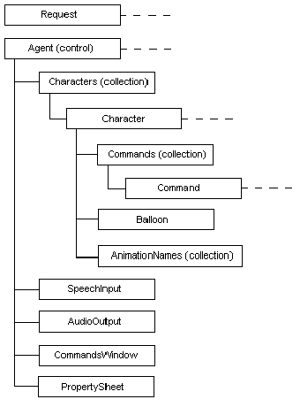

title: The Agent Object Model
description: The Agent Object Model
ms.assetid: 4ec6ec3f-9772-4e29-9482-b9860092f053
ms.topic: article
ms.date: 05/31/2018
The Agent Object Model
[Microsoft Agent is deprecated as of Windows 7, and may be unavailable in subsequent versions of Windows.]
The Microsoft Agent Object Model consists of the following objects:
- Request
- Agent (control)
- Characters (collection)
- Character
- Commands (collection)
- Command
- Balloon
- AnimationNames (collection)
- SpeechInput
- AudioOutput
- CommandsWindow
- PropertySheet
These objects are organized in the following hierarchy. (The dotted line following an object indicates that multiple objects can exist.)

Â
Â